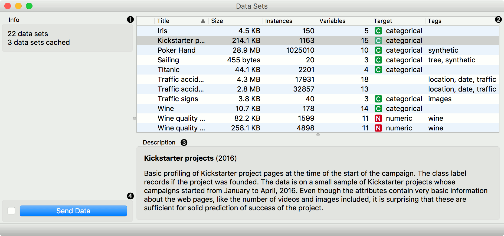
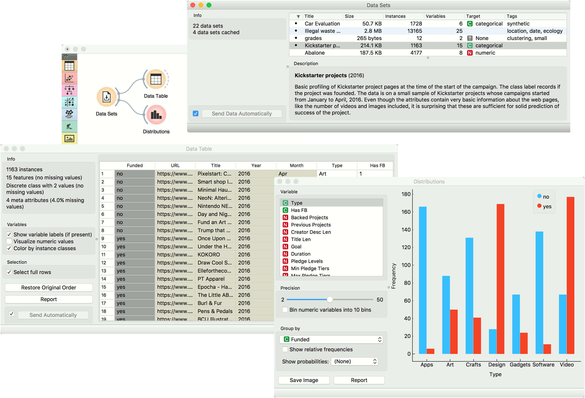

Datasets
Load a dataset from an online repository.
Outputs
- Data: output dataset
Datasets widget retrieves selected dataset from the server and sends it to the output. File is downloaded to the local memory and thus instantly available even without the internet connection. Each dataset is provided with a description and information on the data size, number of instances, number of variables, target and tags.

- Information on the number of datasets available and the number of them downloaded to the local memory.
- Content of available datasets. Each dataset is described with the size, number of instances and variables, type of the target variable and tags.
- Formal description of the selected dataset.
- If Send Data Automatically is ticked, selected dataset is communicated automatically. Alternatively, press Send Data.
Example
Orange workflows can start with Datasets widget instead of File widget. In the example below, the widget retrieves a dataset from an online repository (Kickstarter data), which is subsequently sent to both the Data Table and the Distributions.
